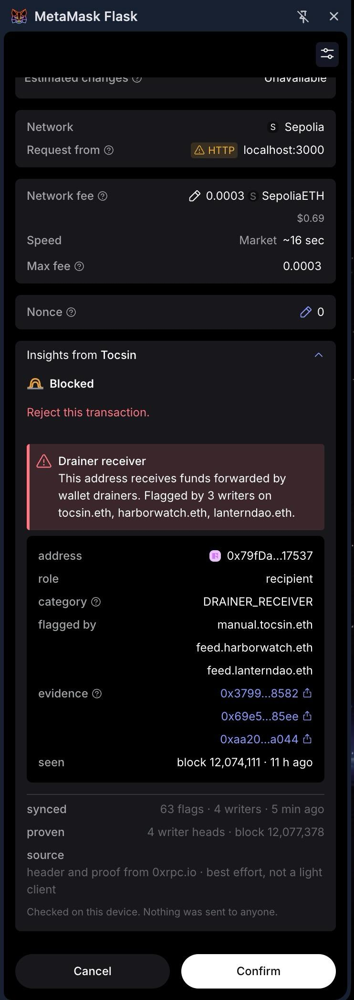
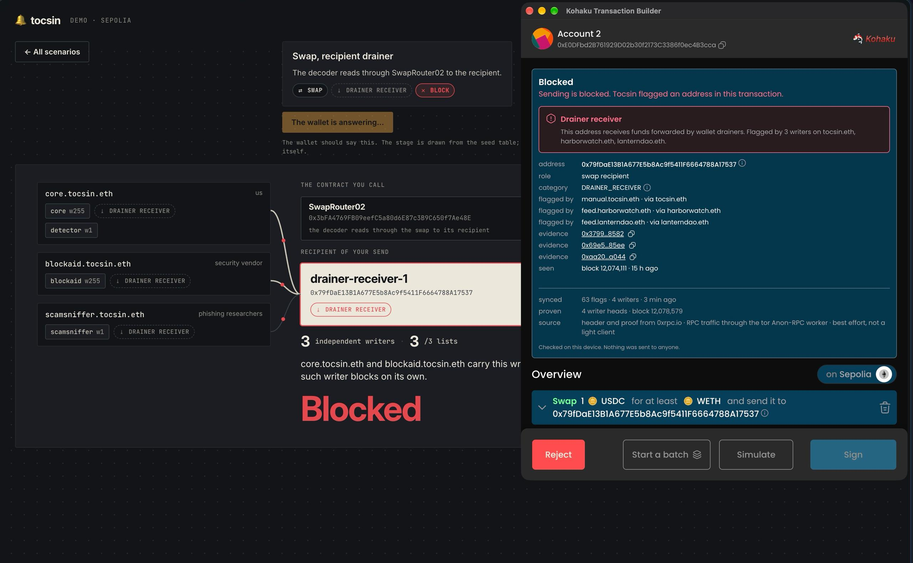
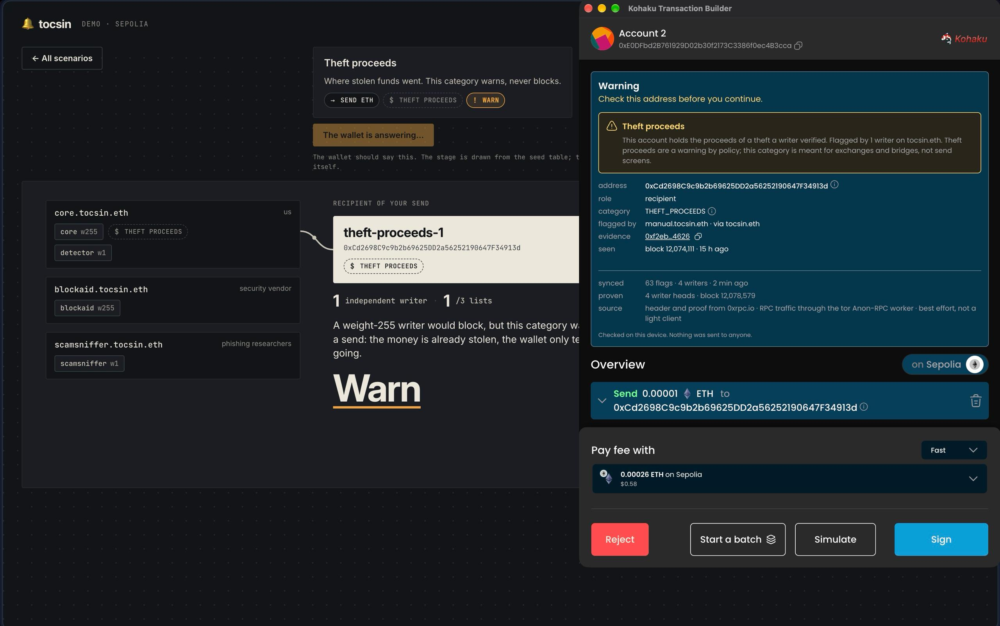

Address poisoning · May 2024
$68M
Sent to a lookalike address.
One wallet sent approximately $68 million in wrapped bitcoin to an attacker. The funds were later returned.
Source: Chainalysis investigation ↗Flagged on an open log. Verified by your wallet. Checked on your device before you sign.
Ethereum · Open source · Sepolia prototype
A lookalike in your transaction history. A malicious approval on a familiar site. The warning needs to reach you before the signature does.
One wallet sent approximately $68 million in wrapped bitcoin to an attacker. The funds were later returned.
Source: Chainalysis investigation ↗Scam Sniffer reported 106,106 victims in 2025. Losses fell from 2024, but a convincing signature request still cost people their funds.
Source: Scam Sniffer annual report ↗A sophisticated attacker doesn't have to break Ethereum. Control a security API or RPC response, and they can omit a known flag or show one target a different answer. A label alone gives the wallet no proof that the record is complete.
The supply-chain risk is real: malicious Ledger Connect Kit releases reached dapps through a compromised publishing account in December 2023. Read Ledger's incident report ↗
Tocsin addresses the data side: verify the published record against Ethereum, then decide locally.
The protocol separates who reports a threat from who delivers the data. A server can carry the flags without being trusted to tell the truth.
A researcher or detector records an address, a threat category and an evidence reference. Each writer has its own record. Corrections are added; history cannot be erased.
A light client verifies an Ethereum block. Storage proofs establish the fingerprint of each writer's record, so an RPC cannot substitute a made-up history.
The wallet rebuilds that fingerprint from the records it downloads. Alter or omit one and it won't match. The result is unverifiable, never a false all-clear.
This is the full light-client verification path. The current demo checks proofs and replay against an RPC-supplied header. Integration status ↓
A trust list is a signed selection of writers and how much authority to give them. It turns a public log into a policy you choose.
One name. A signed choice of writers.
The name can change hands. Your trust doesn't.
A copied feed still counts once.Two independent writers. A stronger warning.
A weight-255 writer in a blocking list can block alone. Safelists and local overrides stay in your control.
The proof establishes what a writer published. You still choose whether to believe them.
Publish under your ENS name ↗Sync the reports from your chosen writers first. Then check recipients on your device, without sending each address to a security service.
“Is this address safe?” sends the address to a security service. The service sees what you ask about and when; your wallet depends on its answer.
Sync your chosen writers' reports, verify the record, then look up the address locally. The threat check needs no per-recipient request.
Direct sync can reveal your network address, timing and which writers you follow. Anon-RPC adds transport privacy; broadcast transactions remain public.

Tocsin supplies the threat record. Wallets bring it to the signing screen. Private transport and independent verification address different points of trust.
Our integration brings Tocsin checks into Kohaku's send and signing flows, with list and RPC settings inside the wallet.
Explore the integration ↗Routes Tocsin's reads through Tor or Nym to reduce the link between your device and its requests. Privacy for the connection; verification for the response.
See the transport setup ↗An independently verified block anchors the record. A compromised RPC cannot pass off altered data as matching that block's state.
Read the verification path ↗

Sepolia demo captures; publisher names are examples. Select either image for the full capture.
The log, signed ENS lists and reader are built, with Snap, browser-extension and Kohaku demo integrations. The current demo still trusts an RPC for the threat-log header. Helios verifies the Anon-RPC worker's published hash; connecting independent consensus verification to Tocsin's own proofs is the next step.
The full light-client path removes the data provider's authority over the answer. It still relies on Ethereum consensus, the light client's checkpoint, your wallet software and the writers and maintainers you choose. Proof of publication is not proof that a report is correct.
No flag doesn't mean safe. Tocsin distributes published reports about known infrastructure, including poisoning operators and drainer receivers. Fresh lookalikes still need local checks and new threats still need detection.
History cannot be deleted. A writer can append a correction that withdraws its flag, and your wallet updates the verdict while retaining the record. You can stop following a writer or override a block locally.
Tocsin has an open, CC0 specification and a reference contract. It is a draft project specification, not an accepted Ethereum standard. Anyone can build a compatible reader or publish their own trust list.
Follow a flagged address from the public log to a wallet warning. Explore the demo, inspect the evidence, or build with the spec.
Sepolia prototype · Explore the scenarios and follow the evidence.